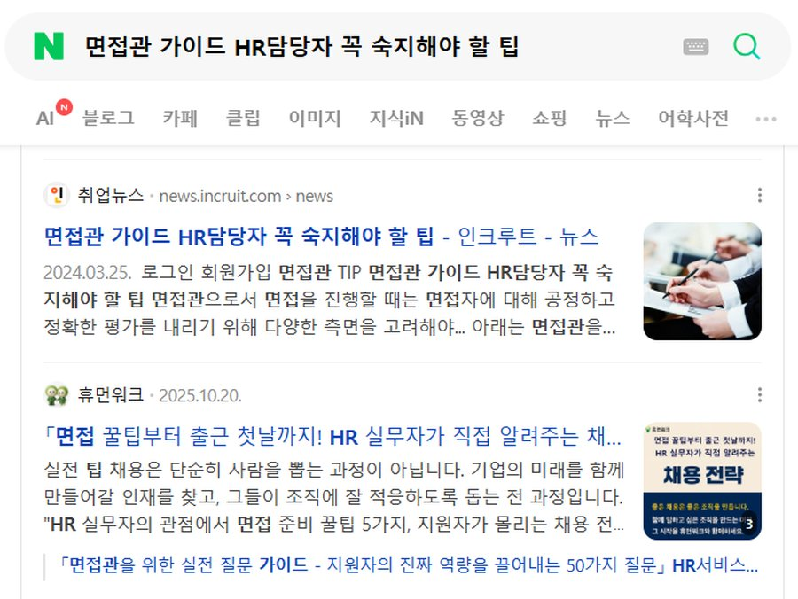
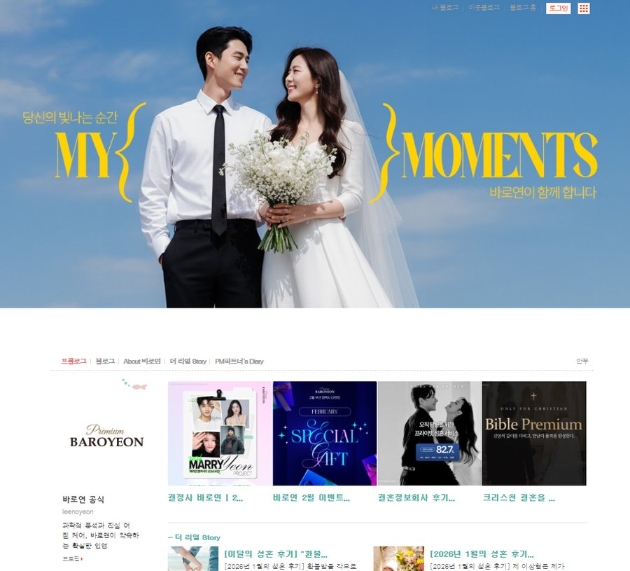

FEATURED PROJECTS
두 회사에서 쌓은
마케팅 방식
플랫폼과 매칭 서비스라는 다른 환경에서, 공통적으로 "문제를 보고 다음 액션을 설계하는 일"을 해왔습니다.
PROJECT 01 · INCRUIT
인크루트 — 통합 마케팅 고도화
CRM과 퍼포먼스를 연결하고, 유기적 트래픽까지 한 흐름으로 관리한 경험입니다.
01 · CRM 기반 고객 여정 개선
단순 발송이 아니라 고객군을 나누고, 행동 데이터에 맞춰 메시지와 콘텐츠를 조정했습니다.
Segmentation — 유입 채널·행동 데이터 기반 고객군 구분
Message & Content — 관심사·행동 맥락별 메시지 설계
Measurement — 재방문·전환 추적 후 다음 액션 연결

02 · 기술 기반 SEO 최적화 및 유입 자동화
검색엔진 기본 구조부터 콘텐츠, 추적, 리포팅까지 직접 연결했습니다.
Technical SEO — 메타 태그·사이트맵·구조화 데이터 개선
Content SEO — GitHub 기반 웹문서로 노출 영역 확대
Tracking — GA4 기반 Organic 트래픽 월간 대시보드

PROJECT 02 · 고유알앤디 (바로연)
오프라인과 디지털을 잇는 통합 마케팅
광고, 콘텐츠, 홈페이지, 행사, 제휴까지 브랜드가 고객과 만나는 접점을 직접 운영한 경험입니다.
01 · 온라인 마케팅 전략 수립 및 실행
SA·DA 매체 운영부터 랜딩·소재 기획, 대행사 관리까지 성과 개선을 주도했습니다.
SA 전환단가 18만원 → 7만원
DA 전환단가 6만원 → 2만원
DB +1,000건 / 월
대행사 관리를 통한 월간 캠페인 성과 개선 주도
신규 매체 발굴 및 ROI 비교 분석
브랜드 타깃 맞춤형 랜딩페이지·배너 기획
A/B 테스트 운영으로 전환율 향상
02 · 홈페이지 리뉴얼 및 전환 구조 개선
방문자 체류 시간과 온라인 상담건수를 높이기 위한 홈페이지 리뉴얼을 기획하고 제작했습니다.
기존 ASP 코드 → React + Express 전환
UX/UI 개선 및 웹디자인팀 협업
페이지 콘텐츠 기획 및 서비스 제휴사 협업
DB 입력 페이지 카카오 싱크 도입

03 · 콘텐츠 · 브랜딩 · 채널 확장
한 채널의 성과보다 브랜드가 노출되는 접점을 넓히는 데 집중했습니다.
SNS — 인스타그램·페이스북 운영 → KPI 120% 초과 달성
PR — 블로그·카페·보도기사 → 브랜드 언론 홍보
인플루언서 — 섭외·기획·성과분석 → 준 메가 인플루언서 15명 확보
B2B/제휴 — 커뮤니티 제휴·프로모션 → 연 매출 8천만원 발생